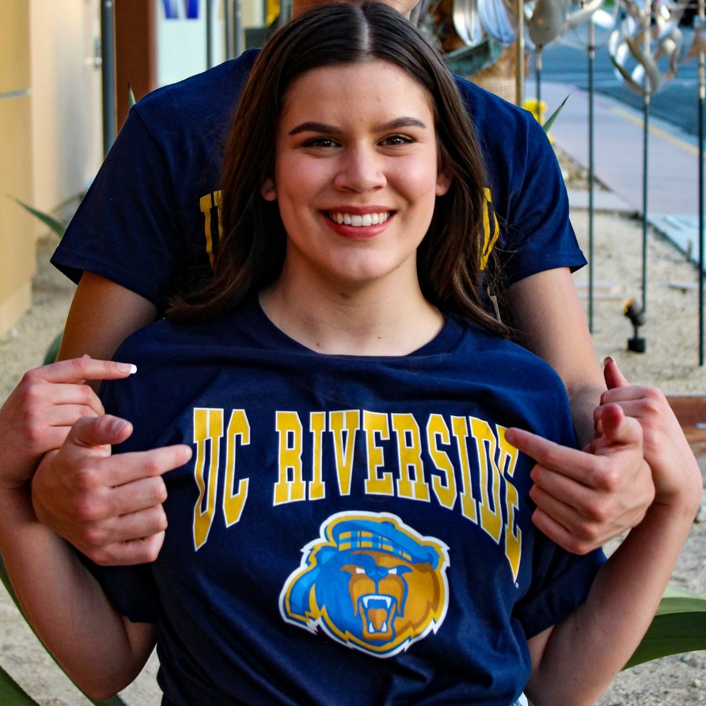
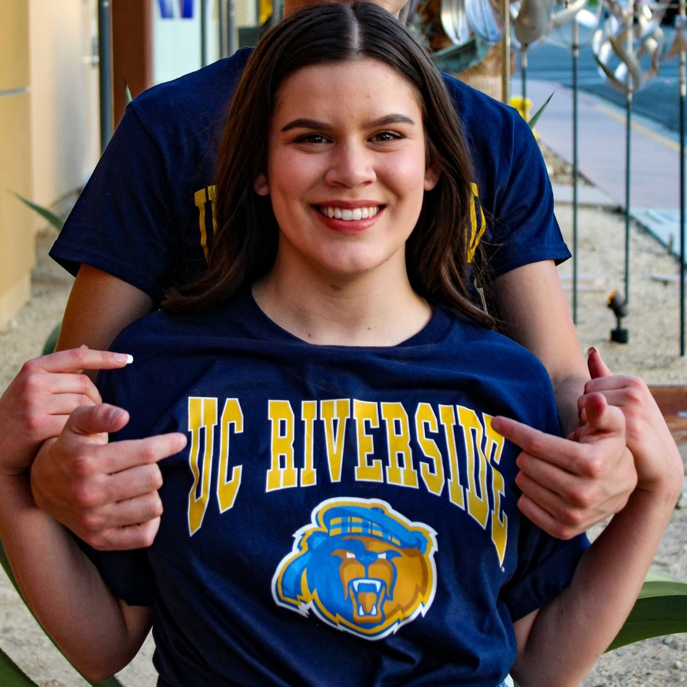
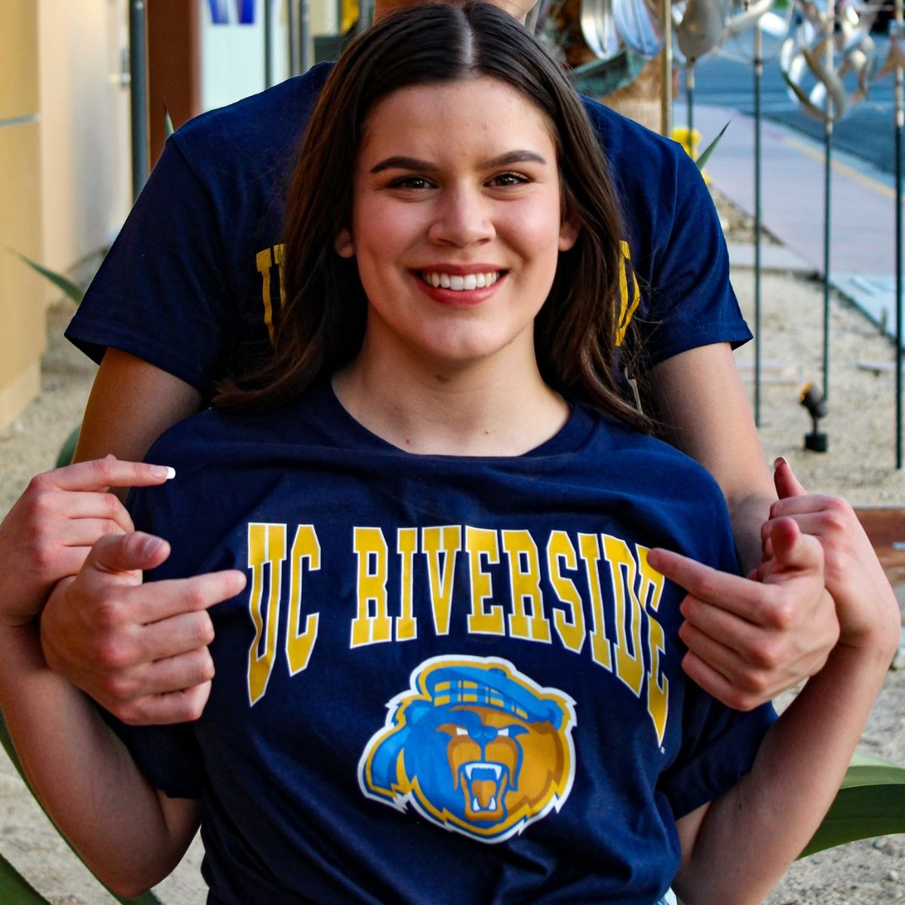

Ava Anderson
Hello! My name is Ava, and I’m 18 years old. I am currently a student at the University of California, Riverside studying Sociology with the intent to double major. My Passion for Journalism started in High School when I took a Journalism class. Within a couple of months, I was already on the School News as an Achor among Seniors. In addition, I won the highest regarded award for the local Digicom Film Festival with my motivational short called “Dear, Time”. By the following year, I was directing the School News. Throughout High School, I directed and starred in the School News and brought new, engaging, and diverse segments to the show. During the Pandemic, I took on the role of Community Manager at My Father’s Coworking Community Business and Digital Content Manager and Assistant to his Marketing Company in Palm Springs. As the Community Manager, I oversaw daily operations and managed reception, billing, and new client relationships. Some of the Digital content projects I executed included podcast production, social media management, organizing publisher archives, video production, and similar for-hire tasks.
I now live in Riverside and work remotely for a Publishing Company called Empire Media Group, which publishes OK! Magazine, Radar Online, Morning Honey, The Royal Observer, and more! As a social media coordinator, I manage the online, global social media accounts across various platforms while also going to school full-time. Over the years, I have developed many skills in my different roles, including technologies such as iMovie, Final Cut Pro, Hubspot, OfficeRnd, Google Analytics, Creator Studio, Buffer, and All essential software & SAAS.
Aside from Journalism, I believe it is important to pursue other passions outside of a potential career, and if applicable also pursue leadership roles in those hobbies. I have been dancing since I was three years old in the art of ballet, tap, jazz, lyrical, contemporary, and hip-hop. I was extremely devoted to this passion, averaging approximately six hours a week, with an additional nine hours on the weekend for rehearsals during competition and show season. When I entered high school I joined my high school’s dance team, which added additional hours to my weekly schedule, and during my senior year was elected by my peers to be captain! I also was involved in ASB and was the main photographer and head editor of our school’s yearbook, producing nearly 300 pages of a book four times throughout my high school experience.
I hope to join the dance team in college once we return to campus! However, I did get to go through virtual, formal recruitment for Panhellenic, and am now a part of the sorority, Alpha Chi Omega. A philanthropic sorority, we are dedicated to aiding survivors who have been affected by domestic violence while simultaneously promoting healthy relationships among young adults. In the first quarter of being in the sorority, I joined the Chapter Relations and Standards Board as a freshman representative. Currently, I am the Head Awards Chair, Freshman Risk Representative, and on the board for Diversity, Equity, and Inclusion within our Chapter. I also just applied to Brothers and Sisters against Violence which is an organization on campus that works to prevent, educate, and bring awareness to sexual violence on campus! In my free time, I like to spend time with my dogs, do yoga, meditation, and bake!
Hello! My name is Ava, and I’m 18 years old. I am currently a student at the University of California, Riverside studying Sociology with the intent to double major. My Passion for Journalism started in High School when I took a Journalism class. Within a couple of months, I was already on the School News as an Achor among Seniors. In addition, I won the highest regarded award for the local Digicom Film Festival with my motivational short called “Dear, Time”. By the following year, I was directing the School News. Throughout High School, I directed and starred in the School News and brought new, engaging, and diverse segments to the show. During the Pandemic, I took on the role of Community Manager at My Father’s Coworking Community Business and Digital Content Manager and Assistant to his Marketing Company in Palm Springs. As the Community Manager, I oversaw daily operations and managed reception, billing, and new client relationships. Some of the Digital content projects I executed included podcast production, social media management, organizing publisher archives, video production, and similar for-hire tasks.
I now live in Riverside and work remotely for a Publishing Company called Empire Media Group, which publishes OK! Magazine, Radar Online, Morning Honey, The Royal Observer, and more! As a social media coordinator, I manage the online, global social media accounts across various platforms while also going to school full-time. Over the years, I have developed many skills in my different roles, including technologies such as iMovie, Final Cut Pro, Hubspot, OfficeRnd, Google Analytics, Creator Studio, Buffer, and All essential software & SAAS.
Aside from Journalism, I believe it is important to pursue other passions outside of a potential career, and if applicable also pursue leadership roles in those hobbies. I have been dancing since I was three years old in the art of ballet, tap, jazz, lyrical, contemporary, and hip-hop. I was extremely devoted to this passion, averaging approximately six hours a week, with an additional nine hours on the weekend for rehearsals during competition and show season. When I entered high school I joined my high school’s dance team, which added additional hours to my weekly schedule, and during my senior year was elected by my peers to be captain! I also was involved in ASB and was the main photographer and head editor of our school’s yearbook, producing nearly 300 pages of a book four times throughout my high school experience.
I hope to join the dance team in college once we return to campus! However, I did get to go through virtual, formal recruitment for Panhellenic, and am now a part of the sorority, Alpha Chi Omega. A philanthropic sorority, we are dedicated to aiding survivors who have been affected by domestic violence while simultaneously promoting healthy relationships among young adults. In the first quarter of being in the sorority, I joined the Chapter Relations and Standards Board as a freshman representative. Currently, I am the Head Awards Chair, Freshman Risk Representative, and on the board for Diversity, Equity, and Inclusion within our Chapter. I also just applied to Brothers and Sisters against Violence which is an organization on campus that works to prevent, educate, and bring awareness to sexual violence on campus! In my free time, I like to spend time with my dogs, do yoga, meditation, and bake!
Hello! My name is Ava, and I’m 18 years old. I am currently a student at the University of California, Riverside studying Sociology with the intent to double major. My Passion for Journalism started in High School when I took a Journalism class. Within a couple of months, I was already on the School News as an Achor among Seniors. In addition, I won the highest regarded award for the local Digicom Film Festival with my motivational short called “Dear, Time”. By the following year, I was directing the School News. Throughout High School, I directed and starred in the School News and brought new, engaging, and diverse segments to the show. During the Pandemic, I took on the role of Community Manager at My Father’s Coworking Community Business and Digital Content Manager and Assistant to his Marketing Company in Palm Springs. As the Community Manager, I oversaw daily operations and managed reception, billing, and new client relationships. Some of the Digital content projects I executed included podcast production, social media management, organizing publisher archives, video production, and similar for-hire tasks.
I now live in Riverside and work remotely for a Publishing Company called Empire Media Group, which publishes OK! Magazine, Radar Online, Morning Honey, The Royal Observer, and more! As a social media coordinator, I manage the online, global social media accounts across various platforms while also going to school full-time. Over the years, I have developed many skills in my different roles, including technologies such as iMovie, Final Cut Pro, Hubspot, OfficeRnd, Google Analytics, Creator Studio, Buffer, and All essential software & SAAS.
Aside from Journalism, I believe it is important to pursue other passions outside of a potential career, and if applicable also pursue leadership roles in those hobbies. I have been dancing since I was three years old in the art of ballet, tap, jazz, lyrical, contemporary, and hip-hop. I was extremely devoted to this passion, averaging approximately six hours a week, with an additional nine hours on the weekend for rehearsals during competition and show season. When I entered high school I joined my high school’s dance team, which added additional hours to my weekly schedule, and during my senior year was elected by my peers to be captain! I also was involved in ASB and was the main photographer and head editor of our school’s yearbook, producing nearly 300 pages of a book four times throughout my high school experience.
I hope to join the dance team in college once we return to campus! However, I did get to go through virtual, formal recruitment for Panhellenic, and am now a part of the sorority, Alpha Chi Omega. A philanthropic sorority, we are dedicated to aiding survivors who have been affected by domestic violence while simultaneously promoting healthy relationships among young adults. In the first quarter of being in the sorority, I joined the Chapter Relations and Standards Board as a freshman representative. Currently, I am the Head Awards Chair, Freshman Risk Representative, and on the board for Diversity, Equity, and Inclusion within our Chapter. I also just applied to Brothers and Sisters against Violence which is an organization on campus that works to prevent, educate, and bring awareness to sexual violence on campus! In my free time, I like to spend time with my dogs, do yoga, meditation, and bake!
Experience
Social Media Manager
• Oversaw multiple Social Media Platforms & Posted a minimum of 100 posts per day
• Experience with Buffer, Creator Studio, and Adobe
Community Manager
• Oversaw daily operations for a thriving, Coworking Community
• Managed Reception, Billing, & New Client Relationships and Outreach
Digital Content Organizer & Assistant
• For hire tasks such as:
• Podcast Production
• Social Media Management
• Organziing Publisher Archives
• Video Production
Education
University of California,Riverside
Palm Springs High School
Portfolio


 

